<!doctype html>
<html><head><meta charset="utf-8">
<title>Workflow hero comp</title>
<!--
  Final 20 s composition for the Workflows hero (1920x1080, 30 fps, silent, loops).
  render.cjs loads this page and calls window.renderAt(t) for every frame, then screenshots.
  Recording frames come from ../renders/frames/<seg>/ (made by extract.sh).
  Timeline (s): title 0-2.4 · girl 1.9-4.35 · tabs 4.05-6.5 · merge 6.3-7.45 · ALFA typing 7.05-9.95
  · ALFA builds 9.9-11.85 · canvas 11.8-13.15 · run select 13.1-14.2 · run timelapse 14.15-15.7
  · story output 15.5-17.4 · end card 17.2-20 (fades back to the title background for the loop).
-->
<style>
@font-face{font-family:'Archivo Black';src:url('assets/fonts/ArchivoBlack-Regular.ttf')}
@font-face{font-family:'CairoV';src:url('assets/fonts/Cairo-var.ttf');font-weight:200 1000}
:root{--img:#3292FF;--vid:#F83AAE;--aud:#06b58a;--accent:#8738F5;--lav:#B996FF;
  --disp:'Archivo Black','Arial Black',sans-serif;--ui:'CairoV',system-ui,sans-serif}
*{box-sizing:border-box;margin:0}
html,body{width:1920px;height:1080px;overflow:hidden;background:#0B0912}
#stage{position:absolute;inset:0;overflow:hidden;background:#0B0912}
.layer{position:absolute;inset:0;overflow:hidden;visibility:hidden}
.abs{position:absolute;left:0;top:0;will-change:transform,opacity}
.cam{position:absolute;left:0;top:0;width:1920px;height:1080px;transform-origin:0 0}
.cam img{position:absolute;left:0;top:0;width:1920px;height:1080px;display:block}
/* backgrounds */
.nightbg{position:absolute;inset:0;background:
  radial-gradient(60% 55% at 50% 42%,rgba(135,56,245,.30),transparent 70%),
  radial-gradient(40% 40% at 85% 95%,rgba(50,146,255,.10),transparent 70%),#0B0912}
.dots{position:absolute;inset:0;background-image:radial-gradient(rgba(185,150,255,.16) 1.6px,transparent 1.8px);background-size:34px 34px;
  -webkit-mask-image:radial-gradient(70% 70% at 50% 50%,#000 30%,transparent 80%)}
.grain{position:absolute;inset:-60px;pointer-events:none;opacity:.07;mix-blend-mode:overlay;background-image:url("data:image/svg+xml;utf8,<svg xmlns='http://www.w3.org/2000/svg' width='200' height='200'><filter id='n'><feTurbulence type='fractalNoise' baseFrequency='.85' numOctaves='2' stitchTiles='stitch'/></filter><rect width='200' height='200' filter='url(%23n)'/></svg>")}
/* typed captions */
.ttl{position:absolute;left:0;top:0;font-family:var(--disp);white-space:nowrap;line-height:1.05;transform-origin:0 0}
.ttl span{display:inline-block;white-space:pre}
.capbg{position:absolute;left:-200px;top:-200px;width:1500px;height:620px;background:radial-gradient(closest-side,rgba(8,6,14,.82),rgba(8,6,14,.55) 55%,transparent);pointer-events:none}
/* title */
#tline{position:absolute;left:0;top:0;display:flex;align-items:center;gap:46px;font-family:var(--disp);font-size:168px;line-height:1;white-space:nowrap;transform-origin:0 0}
#tline .w span,#tline .a span{display:inline-block}
#tline .w span{color:#fff}
#tline .a span{text-shadow:0 0 40px rgba(155,107,255,.45)}
#caret{position:absolute;width:12px;height:150px;border-radius:6px;background:linear-gradient(#C95AC5,#55AAFF);box-shadow:0 0 24px 4px rgba(155,107,255,.7)}
#sheen{position:absolute;top:0;width:260px;height:220px;background:linear-gradient(100deg,transparent,rgba(255,255,255,.55),transparent);mix-blend-mode:overlay;filter:blur(6px)}
.tlogo{height:62px}
/* girl */
.scrim{position:absolute;inset:0;background:linear-gradient(90deg,rgba(12,6,24,.72) 0%,rgba(12,6,24,.35) 40%,transparent 62%)}
/* tabs chaos */
.win{position:absolute;left:260px;top:300px;width:1400px;height:720px;border-radius:22px;background:#1b1826;box-shadow:0 0 0 2px #2e2840,0 40px 90px rgba(0,0,0,.55);overflow:hidden}
.bar{position:absolute;left:0;top:0;right:0;height:64px;background:#14111d}
.wdots{position:absolute;left:22px;top:22px;display:flex;gap:9px}.wdots i{width:13px;height:13px;border-radius:50%;background:#3a3350}
.tab{position:absolute;top:14px;height:50px;border-radius:12px 12px 0 0;background:#221d31;color:#c9c2da;font-family:var(--ui);font-size:20px;font-weight:700;display:flex;align-items:center;gap:10px;padding:0 16px;overflow:hidden;white-space:nowrap}
.tab.on{background:#2d2640;color:#fff}
.tab b{width:12px;height:12px;border-radius:50%;flex:none}
.content{position:absolute;left:0;right:0;top:64px;bottom:0}
.pane{position:absolute;inset:44px;display:none}.pane.on{display:block}
.grid6{display:grid;grid-template-columns:repeat(3,1fr);gap:22px;height:470px}
.grid6 div{border-radius:16px;background:linear-gradient(135deg,rgba(50,146,255,.55),rgba(50,146,255,.15))}
.btnfake{margin-top:28px;width:260px;height:62px;border-radius:14px;font-family:var(--ui);font-weight:800;font-size:23px;display:grid;place-items:center;color:#fff}
.vprev{height:360px;border-radius:16px;background:linear-gradient(135deg,rgba(248,58,174,.6),rgba(248,58,174,.15))}
.tlne{margin-top:30px;height:70px;border-radius:12px;background:#151221;display:flex;gap:8px;padding:10px}
.tlne i{flex:1;border-radius:8px;background:rgba(248,58,174,.55)}
.wave{height:420px;display:flex;align-items:center;gap:7px;padding:0 10px}
.wave i{flex:1;border-radius:6px;background:rgba(6,181,138,.75)}
.dl{font-family:var(--ui);font-size:21px;font-weight:700;color:#e8e3f3;background:#2a2340;border:1px solid #3c3456;border-radius:12px;padding:8px 18px;white-space:nowrap;box-shadow:0 10px 26px rgba(0,0,0,.4);display:flex;gap:10px;align-items:center}
.dl b{width:10px;height:10px;border-radius:50%}
.orb{width:40px;height:40px;border-radius:50%;background:radial-gradient(circle,#fff 0%,#fff 35%,#C9A8FF 60%,rgba(135,56,245,0) 75%);box-shadow:0 0 50px 22px rgba(135,56,245,.55)}
.ftab{position:absolute;width:190px}
/* ALFA greeting patch (hides the account name) */
.patch{position:absolute;left:770px;top:160px;width:470px;height:92px;border-radius:40px;backdrop-filter:blur(22px);-webkit-backdrop-filter:blur(22px);background:rgba(58,30,104,.18)}
.greet{position:absolute;left:0;top:183px;width:2010px;text-align:center;font-family:var(--ui);font-weight:800;font-size:44px;letter-spacing:-.5px;color:#fff}
/* story card */
.scard{position:absolute;left:0;top:0;width:450px;height:800px;border-radius:30px;overflow:hidden;border:2px solid rgba(255,255,255,.18);
  box-shadow:0 40px 90px rgba(0,0,0,.6),0 0 80px rgba(135,56,245,.35);transform-origin:50% 50%}
.scard img{width:100%;height:100%;object-fit:cover;display:block}
.scard .lb{position:absolute;left:18px;bottom:18px;font-family:var(--ui);font-size:22px;font-weight:800;color:#fff;background:rgba(10,8,18,.55);padding:4px 16px;border-radius:999px;display:flex;gap:10px;align-items:center}
.scard .lb b{width:10px;height:10px;border-radius:50%;background:var(--vid)}
.sub2{font-family:var(--ui);font-size:38px;font-weight:700;color:#d6cdea;white-space:nowrap}
/* end card */
.ichip{font-family:var(--ui);font-size:28px;font-weight:800;color:#efe9fb;background:rgba(255,255,255,.06);border:2px solid rgba(185,150,255,.45);border-radius:999px;padding:4px 30px 6px;white-space:nowrap}
.esub{font-family:var(--ui);font-size:36px;font-weight:700;color:#cfc6e6;white-space:nowrap}
.cta{font-family:var(--disp);font-size:44px;white-space:nowrap;color:#fff;background:linear-gradient(135deg,#8337F1,#6730D4);padding:14px 40px 18px;border-radius:20px;box-shadow:0 18px 50px rgba(131,55,241,.45)}
.glowbg{width:900px;height:520px;border-radius:50%;background:radial-gradient(closest-side,rgba(135,56,245,.45),transparent)}
</style></head>
<body><div id="stage"></div>
<script>
const W=1920,H=1080;
const stage=document.getElementById('stage');
const mk=(p,h)=>{const d=document.createElement('div');d.innerHTML=h.trim();const e=d.firstElementChild;p.appendChild(e);return e;};
const P=(t,a,d)=>Math.min(1,Math.max(0,(t-a)/d));
const lerp=(a,b,p)=>a+(b-a)*p;
const oc=p=>1-Math.pow(1-p,3), ic=p=>p*p*p, io=p=>p<.5?4*p*p*p:1-Math.pow(-2*p+2,3)/2, oq=p=>1-Math.pow(1-p,5);
const spring=p=>p<=0?0:p>=1?1:1-Math.exp(-7*p)*Math.cos(8*p);
const C=(el,x,y,s,r)=>el.style.transform=`translate(${x}px,${y}px) translate(-50%,-50%) scale(${s==null?1:s}) rotate(${r||0}deg)`;
const L=(el,x,y,s)=>el.style.transform=`translate(${x}px,${y}px) scale(${s==null?1:s})`;
const op=(el,v)=>el.style.opacity=Math.max(0,Math.min(1,v));
const vis=(el,on)=>el.style.visibility=on?'visible':'hidden';
const svgNS='http://www.w3.org/2000/svg';
function svg(parent){const s=document.createElementNS(svgNS,'svg');s.setAttribute('width',W);s.setAttribute('height',H);s.style.cssText='position:absolute;left:0;top:0;overflow:visible';parent.appendChild(s);return s;}
function path(s,d,col,w){const p=document.createElementNS(svgNS,'path');p.setAttribute('d',d);p.setAttribute('stroke',col);p.setAttribute('stroke-width',w);p.setAttribute('fill','none');p.setAttribute('stroke-linecap','round');p.setAttribute('pathLength','1');p.setAttribute('stroke-dasharray','1');p.setAttribute('stroke-dashoffset','1');s.appendChild(p);return p;}
function title(parent,text,x,y,size,color){const el=mk(parent,`<div class="ttl" style="font-size:${size}px;color:${color}"></div>`);
  const chars=[...text].map(ch=>{const s=document.createElement('span');s.textContent=ch;el.appendChild(s);return s;});L(el,x,y);return {el,chars};}
function typeT(T,t,tin,tout){
  const v=t>=tin-0.01&&(tout==null||t<tout+0.25);T.el.style.visibility=v?'inherit':'hidden';if(!v)return;
  const fo=tout==null?1:1-P(t,tout,0.22);
  T.chars.forEach((c,i)=>{const p=oc(P(t,tin+i*0.03,0.2));c.style.opacity=p*fo;c.style.transform=`translateY(${8*(1-p)}px)`;c.style.filter=p<1?`blur(${4*(1-p)}px)`:'none';});}
// caption with a soft dark pad behind it, so it reads on any recording
function caption(parent,text,x,y,size,color){const bg=mk(parent,'<div class="abs capbg"></div>');L(bg,x-260,y-200);const T=title(parent,text,x,y,size,color);T.bg=bg;return T;}
function capT(T,t,tin,tout){typeT(T,t,tin,tout);const a=P(t,tin-0.15,0.3)*(tout==null?1:1-P(t,tout,0.3));op(T.bg,a);}

/* ---------- recording layers: one  per layer, a virtual camera on top ---------- */
const FR='../renders/frames/';
const SEG={girl:[0,30,90],alfa:[38.5,30,375],build:[163,30,480],canvas:[258,30,390],runsel:[44,30,301],runtl:[69,10,800],story:[0,30,150]};
const pending=[];
function setFrame(img,seg,src){const [s0,fps,n]=SEG[seg];const i=Math.max(1,Math.min(n,1+Math.round((src-s0)*fps)));
  const u=FR+seg+'/f'+String(i).padStart(5,'0')+'.jpg';if(img.dataset.u!==u){img.dataset.u=u;img.src=u;pending.push(img.decode().catch(()=>{}));}}
function recLayer(extra){const ly=mk(stage,'<div class="layer"></div>');const cam=mk(ly,'<div class="cam"></div>');if(extra)extra(cam);return {ly,cam,img:cam.querySelector('img')};}
// UI recordings after the chat view only fill the top-left 1536x995 of the frame; keep the camera inside it
function camera(R,cx,cy,z,maxW,maxH){maxW=maxW||1920;maxH=maxH||1080;const hw=960/z,hh=540/z;
  cx=Math.min(maxW-hw,Math.max(hw,cx));cy=Math.min(maxH-hh,Math.max(hh,cy));
  R.cam.style.transform=`translate(${960-cx*z}px,${540-cy*z}px) scale(${z})`;}

/* ====================== LAYERS (bottom → top) ====================== */
const LT=mk(stage,'<div class="layer"></div>');           // title
const LG=recLayer();                                       // girl
const LTB=mk(stage,'<div class="layer"></div>');          // tabs chaos + merge
const LA=recLayer(cam=>{mk(cam,'<div class="patch"></div>');mk(cam,'<div class="greet">Good afternoon</div>');}); // ALFA typing
const LB=recLayer();                                       // ALFA builds
const LC=recLayer();                                       // canvas
const LR=recLayer();                                       // run select
const LTL=recLayer();                                      // run timelapse
const LS=mk(stage,'<div class="layer"></div>');           // story output
const LE=mk(stage,'<div class="layer"></div>');           // end card
const LCAP=mk(stage,'<div class="layer" style="visibility:visible"></div>'); // captions over recordings
mk(stage,'<div class="grain"></div>');

/* ---------- A: title ---------- */
mk(LT,'<div class="nightbg"></div>');mk(LT,'<div class="dots"></div>');
const tWrap=mk(LT,'<div class="abs" style="width:1920px;height:1080px;transform-origin:0 0"></div>');
const tLogo=mk(tWrap,'');
const tline=mk(tWrap,'<div id="tline"><div class="w"></div><svg class="x" width="120" height="120" viewBox="0 0 120 120" style="overflow:visible"><defs><linearGradient id="xg" x1="0" y1="0" x2="1" y2="1"><stop offset="0" stop-color="#C95AC5"/><stop offset="1" stop-color="#55AAFF"/></linearGradient><filter id="xglow" x="-50%" y="-50%" width="200%" height="200%"><feGaussianBlur stdDeviation="6" result="b"/><feMerge><feMergeNode in="b"/><feMergeNode in="SourceGraphic"/></feMerge></filter></defs><path id="x1" d="M14 14 L106 106" stroke="url(#xg)" stroke-width="22" stroke-linecap="round" fill="none" pathLength="1" stroke-dasharray="1" stroke-dashoffset="1" filter="url(#xglow)"/><path id="x2" d="M106 14 L14 106" stroke="url(#xg)" stroke-width="22" stroke-linecap="round" fill="none" pathLength="1" stroke-dasharray="1" stroke-dashoffset="1" filter="url(#xglow)"/></svg><div class="a"></div></div>');
const wW=[...'Workflow'].map(ch=>mk(tline.querySelector('.w'),`<span>${ch}</span>`));
const wA=[...'ALFA'].map((ch,i)=>mk(tline.querySelector('.a'),`<span style="color:${['#C95AC5','#A863E8','#7E8BFF','#55AAFF'][i]}">${ch}</span>`));
const X1=tline.querySelector('#x1'),X2=tline.querySelector('#x2'),Xsvg=tline.querySelector('svg');
const caret=mk(tWrap,'<div id="caret" class="abs"></div>');
const sheen=mk(tWrap,'<div id="sheen" class="abs"></div>');
let TL=null; // measured layout
function measure(){const w=tline.offsetWidth,h=tline.offsetHeight;const x0=(W-w)/2,y0=(H-h)/2+30;L(tline,x0,y0);
  const ends=[...wW,...wA].map(s=>x0+s.offsetLeft+s.offsetWidth+(s.parentElement.offsetLeft));
  // offsets of spans are relative to their word container
  const wx=tline.querySelector('.w').offsetLeft,ax=tline.querySelector('.a').offsetLeft;
  const endW=wW.map(s=>x0+wx+s.offsetLeft+s.offsetWidth),endA=wA.map(s=>x0+ax+s.offsetLeft+s.offsetWidth);
  const xr=Xsvg.getBoundingClientRect();TL={x0,y0,w,h,endW,endA,xc:xr.left+xr.width/2,yc:xr.top+xr.height/2,startW:x0+wx,startX:xr.left};}

/* ---------- B: girl ---------- */
mk(LG.ly,'<div class="scrim"></div>');
const g1=caption(LG.ly,'Same content.',120,150,100,'#fff');
const g2=caption(LG.ly,'Every week.',120,262,100,'#C3A2FF');
g2.bg.remove();

/* ---------- C/D: tabs chaos → one place ---------- */
mk(LTB,'<div class="nightbg"></div>');
const win=mk(LTB,'<div class="win"><div class="bar"><div class="wdots"><i></i><i></i><i></i></div></div><div class="content"></div></div>');
const bar=win.querySelector('.bar'),content=win.querySelector('.content');
const COL={img:'#3292FF',vid:'#F83AAE',aud:'#06b58a'};
const panes={
 img:mk(content,`<div class="pane"><div class="grid6"><div></div><div></div><div></div><div></div><div></div><div></div></div><div class="btnfake" style="background:${COL.img}">Generate image</div></div>`),
 vid:mk(content,`<div class="pane"><div class="vprev"></div><div class="tlne"><i></i><i style="flex:2"></i><i></i><i style="flex:1.5"></i><i></i></div><div class="btnfake" style="background:${COL.vid}">Render video</div></div>`),
 aud:mk(content,`<div class="pane"><div class="wave">${Array.from({length:64},(_,i)=>`<i style="height:${20+Math.abs(Math.sin(i*.7)*Math.cos(i*.23))*360}px"></i>`).join('')}</div><div class="btnfake" style="background:${COL.aud}">Generate track</div></div>`)};
const TABS=[['img','Image tool',2.6],['vid','Video tool',3.15],['aud','Music',3.6],['img','Upscale',3.95],['aud','Voice',4.25],['vid','Editor',4.5],['img','Image tool',4.7],['aud','Music',4.88],['vid','Video tool',5.02],['img','Resize',5.15]];
const tabEls=TABS.map(tb=>mk(bar,`<div class="tab"><b style="background:${COL[tb[0]]}"></b><span>${tb[1]}</span></div>`));
const DLS=[['ad_v3_final.png','img',3.35],['story_2.mp4','vid',3.85],['music_new.mp3','aud',4.3],['ad_v3_final_FINAL.png','img',4.7],['story_FINAL_2.mp4','vid',5.05]];
const dlEls=DLS.map(d=>mk(LTB,`<div class="abs dl"><b style="background:${COL[d[1]]}"></b>${d[0]}</div>`));
const cursor=mk(LTB,`<div class="abs"><svg viewBox="0 0 24 24" width="36" height="36"><path d="M4 2l16 10-7 1.5L9.5 21z" fill="#fff" stroke="#111" stroke-width="1.5" stroke-linejoin="round"/></svg></div>`);
const t1a=title(LTB,'Images here.',260,96,84,COL.img);
const t1b=title(LTB,'Video there.',940,96,84,COL.vid);
const t1c=title(LTB,'Music somewhere else.',260,190,84,COL.aud);
const flyEls=TABS.map(tb=>mk(LTB,`<div class="abs tab on ftab" style="top:0"><b style="background:${COL[tb[0]]}"></b><span>${tb[1]}</span></div>`));
const orb=mk(LTB,'<div class="abs orb"></div>');
const t2=title(LTB,"Now it's one place.",0,0,92,'#fff');

/* ---------- captions over the recordings ---------- */
const cJust=caption(LCAP,'Just say it.',110,64,92,'#fff');
const cBuild=caption(LCAP,'ALFA builds the workflow.',110,64,84,'#fff');
const cRun=caption(LCAP,'Run it.',110,64,92,'#fff');

/* ---------- story output ---------- */
const sBg=mk(LS,'<div class="abs" style="width:1920px;height:1080px"></div>');
const sBgImg=sBg.querySelector('img');
mk(LS,'<div class="abs" style="width:1920px;height:1080px;background:linear-gradient(90deg,rgba(11,9,18,.88) 0%,rgba(11,9,18,.55) 55%,rgba(11,9,18,.35) 100%)"></div>');
const sCard=mk(LS,'<div class="abs scard"><div class="lb"><b></b>Story video · with music</div></div>');
const sImg=sCard.querySelector('img');
const t6=title(LS,'3 ads + a story video.',120,400,80,'#fff');
const s6=mk(LS,'<div class="abs sub2">From one product photo.</div>');

/* ---------- end card ---------- */
mk(LE,'<div class="nightbg"></div>');mk(LE,'<div class="dots"></div>');
const eGlow=mk(LE,'<div class="abs glowbg"></div>');
const eLogo=mk(LE,'');
const t7=title(LE,'Build workflows in one sentence.',0,0,70,'#fff');
const esvg=svg(LE);
esvg.insertAdjacentHTML('afterbegin','<defs><linearGradient id="lg" x1="0" x2="1"><stop offset="0" stop-color="#C95AC5"/><stop offset="1" stop-color="#55AAFF"/></linearGradient></defs>');
const eline=path(esvg,'M700 626 L1220 626','url(#lg)',5);
const DOTX=[700,960,1220];const dotEls=DOTX.map((x,i)=>mk(LE,`<div class="abs" style="width:22px;height:22px;border-radius:50%;background:${['#C95AC5','#9B6BFF','#55AAFF'][i]};box-shadow:0 0 0 5px #0B0912,0 0 18px 4px rgba(155,107,255,.6)"></div>`));
const ICH=['ALFA','Claude','MCP'];const ichEls=ICH.map(c=>mk(LE,`<div class="abs ichip">${c}</div>`));
const esub=mk(LE,'<div class="abs esub">Works inside the AI you already use.</div>');
const ecta=mk(LE,'<div class="abs cta">Try it at adflex.ai</div>');

let t7w=0;
/* ====================== RENDER ====================== */
function render(t){
  if(!TL)measure();
  /* ---------- A: title 0–2.4 ---------- */
  vis(LT,t<2.45||t>=19.55);
  if(t<2.45){
    op(tLogo,oc(P(t,0.05,0.35))*(1-P(t,1.75,0.2)));C(tLogo,W/2,TL.y0-70,1);
    // Workflow typed, each letter rises out of a blur
    wW.forEach((s,i)=>{const p=oc(P(t,0.22+i*0.055,0.18));s.style.opacity=p;s.style.transform=`translateY(${18*(1-p)}px)`;s.style.filter=p<1?`blur(${8*(1-p)}px)`:'none';});
    X1.setAttribute('stroke-dashoffset',1-oc(P(t,0.7,0.16)));X2.setAttribute('stroke-dashoffset',1-oc(P(t,0.8,0.16)));
    wA.forEach((s,i)=>{const p=oc(P(t,0.98+i*0.07,0.18));s.style.opacity=p;s.style.transform=`translateY(${18*(1-p)}px) scale(${0.9+0.1*p})`;s.style.filter=p<1?`blur(${8*(1-p)}px)`:'none';});
    // caret rides the typing edge
    let cx=TL.startW-24;
    wW.forEach((s,i)=>{if(t>=0.22+i*0.055)cx=TL.endW[i]+14;});
    if(t>=0.7)cx=TL.startX+136;
    wA.forEach((s,i)=>{if(t>=0.98+i*0.07)cx=TL.endA[i]+14;});
    const blink=t>1.3?(Math.floor((t-1.3)*4)%2===0?1:0.15):1;
    op(caret,P(t,0.1,0.12)*blink*(1-P(t,1.7,0.15)));L(caret,cx,TL.y0+(TL.h-150)/2);
    // sheen sweep
    op(sheen,0);
    const gl=Math.sin(Math.PI*P(t,1.25,0.6));wA.forEach(c=>c.style.textShadow=`0 0 ${40+50*gl}px rgba(155,107,255,${0.45+0.4*gl})`);
    // dive into the × : title scales up around it while the girl opens out of it
    const dv=ic(P(t,1.85,0.55));
    tWrap.style.transformOrigin=`${TL.xc}px ${TL.yc}px`;tWrap.style.transform=`scale(${1+9*dv})`;tWrap.style.opacity=1-P(t,2.0,0.3);
  }
  /* ---------- B: girl 1.9–4.35 ---------- */
  vis(LG.ly,t>=1.88&&t<4.4);
  if(t>=1.88&&t<4.4){
    setFrame(LG.img,'girl',0.15+(t-1.9));
    const rv=io(P(t,1.9,0.5));const r=lerp(0,1500,rv);
    const m=`radial-gradient(circle at ${TL.xc}px ${TL.yc}px,#000 ${r}px,transparent ${r+140}px)`;
    LG.ly.style.webkitMaskImage=rv<1?m:'none';LG.ly.style.maskImage=rv<1?m:'none';
    const push=io(P(t,4.0,0.4));
    const z=lerp(1.18,1.0,oc(P(t,1.9,0.7)))*(1+0.04*P(t,2.4,1.6))*(1+0.5*push);
    camera(LG,lerp(960,680,push),lerp(540,700,push),z);
    LG.ly.style.opacity=1-P(t,4.12,0.25);
    capT(g1,t,2.45,4.0);typeT(g2,t,2.85,4.0);
  }
  /* ---------- C/D: tabs 4.05–6.5, merge to one place 6.3–7.45 ---------- */
  vis(LTB,t>=4.05&&t<7.5);
  if(t>=4.05&&t<7.5){
    const u=2.5+(t-4.05)*1.3;  // the preview's tab timing, played 1.3x
    const wi=oc(P(t,4.05,0.35));win.style.transform=`translateY(${90*(1-wi)}px) scale(${0.96+0.04*wi})`;
    const n=TABS.filter(tb=>u>=tb[2]).length;const tw=n?Math.min(240,1340/n):240;
    let active=-1;TABS.forEach((tb,i)=>{const e=tabEls[i];const on=u>=tb[2];e.style.display=on?'flex':'none';if(!on)return;active=i;
      const p=oc(P(u,tb[2],0.18));e.style.left=(18+i*tw)+'px';e.style.width=(tw-4)*p+'px';e.style.opacity=p;});
    tabEls.forEach((e,i)=>e.classList.toggle('on',i===active));
    Object.keys(panes).forEach(k=>panes[k].classList.toggle('on',active>=0&&TABS[active][0]===k));
    if(active>=0){const pn=panes[TABS[active][0]];const pp=oc(P(u,TABS[active][2],0.2));pn.style.transform=`translateX(${(1-pp)*40}px)`;pn.style.opacity=pp;}
    const det=P(u,5.45,0.2);op(win,wi*(1-det));
    let cx=1500,cy=900;for(let i=0;i<TABS.length;i++){const ta=TABS[i][2];const w=Math.min(240,1340/(i+1));const tx=260+18+i*w+w/2,ty=340;if(u>=ta-0.2){const p=io(P(u,ta-0.2,0.2));cx=lerp(cx,tx,p);cy=lerp(cy,ty,p);}}
    op(cursor,t>4.15?1-det:0);L(cursor,cx,cy);
    DLS.forEach((d,i)=>{const p=oc(P(u,d[2],0.3));op(dlEls[i],u<d[2]?0:p*(1-det));C(dlEls[i],1560-((i%2)*40),960-i*66-20*(1-p),1,(i%2?2:-2)*(i/2));});
    typeT(t1a,u,2.75,5.3);typeT(t1b,u,3.3,5.3);typeT(t1c,u,3.75,5.3);
    // every tab flies into one glowing point
    const fp=io(P(t,6.3,0.55));
    TABS.forEach((tb,i)=>{const w=1340/TABS.length;const sx=260+18+i*w+w/2,sy=339;
      op(flyEls[i],t<6.3?0:1-P(t,6.7,0.15));C(flyEls[i],lerp(sx,960,fp),lerp(sy,600,fp)-Math.sin(fp*Math.PI)*(80+i*12),lerp(1,0.25,fp),(i%2?14:-14)*Math.sin(fp*Math.PI));});
    const ob=spring(P(t,6.7,0.5));op(orb,t<6.68?0:1);C(orb,960,600,0.4+0.9*ob+18*ic(P(t,7.1,0.35)));
    if(!t2.w){t2.w=t2.el.offsetWidth;}L(t2.el,(W-t2.w)/2,380);typeT(t2,t,6.75,7.12);
  }
  /* ---------- E: ALFA typing 7.05–9.95 ---------- */
  vis(LA.ly,t>=7.05&&t<10.05);
  if(t>=7.05&&t<10.05){
    let s=39.0+(t-7.2)*3.2;if(s>=44.0)s+=0.85;s=Math.min(48.5,Math.max(39.0,s)); // 44.0–44.85 cut: sidebar opened
    setFrame(LA.img,'alfa',s);
    const rv=io(P(t,7.05,0.45));const r=lerp(0,1400,rv);const m=`radial-gradient(circle at 960px 600px,#000 ${r}px,transparent ${r+160}px)`;
    LA.ly.style.webkitMaskImage=rv<1?m:'none';LA.ly.style.maskImage=rv<1?m:'none';
    const z=lerp(1.45,1.8,io(P(t,7.1,1.6)))*(1+0.06*io(P(t,9.6,0.4)));
    camera(LA,lerp(1005,1010,P(t,7,3)),lerp(395,370,io(P(t,7.1,1.6))),z);
    LA.ly.style.opacity=1-P(t,9.9,0.12);
  }
  capT(cJust,t,7.55,9.75);
  /* ---------- F: ALFA builds 9.9–11.85 ---------- */
  vis(LB.ly,t>=9.88&&t<11.95);
  if(t>=9.88&&t<11.95){
    if(t<10.7){setFrame(LB.img,'build',165.4+(t-9.9)*2.0);}
    else{setFrame(LB.img,'build',168.3+(t-10.7)*8.5);}
    const e=io(P(t,10.62,0.5));
    camera(LB,lerp(880,770,e),lerp(677,500,e),lerp(1.7,1.3,e)*(1+0.03*P(t,9.88,0.8)),1536,995);
    LB.ly.style.opacity=P(t,9.88,0.12)*(1-P(t,11.82,0.12));
  }
  capT(cBuild,t,10.05,13.0);
  /* ---------- G: canvas 11.8–13.15 ---------- */
  vis(LC.ly,t>=11.8&&t<13.22);
  if(t>=11.8&&t<13.22){
    setFrame(LC.img,'canvas',258.6+(t-11.8)*3.6);
    const e=io(P(t,11.8,1.4));camera(LC,lerp(760,660,e),lerp(500,470,e),lerp(1.3,1.5,e),1536,995);
    LC.ly.style.opacity=P(t,11.8,0.12)*(1-P(t,13.12,0.1));
  }
  /* ---------- H1: run select 13.1–14.2 ---------- */
  vis(LR.ly,t>=13.1&&t<14.3);
  if(t>=13.1&&t<14.3){
    setFrame(LR.img,'runsel',48.7+(t-13.1)*2.6);
    const e=io(P(t,13.3,0.6));camera(LR,830,lerp(400,600,e),1.35*(1+0.05*P(t,13.1,1.1)),1536,995);
    LR.ly.style.opacity=P(t,13.1,0.1)*(1-P(t,14.18,0.12));
  }
  capT(cRun,t,13.3,15.4);
  /* ---------- H2: run timelapse 14.15–15.7 ---------- */
  vis(LTL.ly,t>=14.15&&t<15.75);
  if(t>=14.15&&t<15.75){
    setFrame(LTL.img,'runtl',69+(15+Math.min(1,(t-14.15)/1.5)*775)/10);
    camera(LTL,lerp(740,770,P(t,14.15,1.5)),500,lerp(1.3,1.36,P(t,14.15,1.5)),1536,995);
    LTL.ly.style.opacity=P(t,14.15,0.1);
  }
  /* ---------- H3: story output 15.5–17.4 ---------- */
  vis(LS,t>=15.5&&t<17.45);
  if(t>=15.5&&t<17.45){
    // background: last timelapse frame, blurred and darkened
    sBgImg.src!==FR+'runtl/f00790.jpg'&&(sBgImg.src=FR+'runtl/f00790.jpg',pending.push(sBgImg.decode().catch(()=>{})));
    const bz=1.36;sBg.style.transformOrigin='0 0';sBg.style.transform=`translate(${960-770*bz}px,${540-500*bz}px) scale(${bz})`;
    const bl=P(t,15.5,0.4);sBg.style.filter=`blur(${12*bl}px) brightness(${1-0.35*bl})`;
    op(LS,1-P(t,17.25,0.2));
    setFrame(sImg,'story',0.3+(t-15.6)*1.25);
    const p=io(P(t,15.55,0.6));const fl=Math.sin((t-15.5)*1.8)*6;
    C(sCard,lerp(1250,1460,p),lerp(560,540,p)+fl*p,lerp(0.25,1,p),lerp(-4,0,p));op(sCard,P(t,15.55,0.15));
    typeT(t6,t,15.75,null);
    const sp=oc(P(t,16.35,0.4));op(s6,sp);L(s6,124,505+12*(1-sp));
  }
  /* ---------- I: end card 17.2–20 ---------- */
  vis(LE,t>=17.2);
  if(t>=17.2){
    const fo=P(t,19.55,0.4);   // loop-out: content fades, background stays as the title's
    op(LE,P(t,17.2,0.3));
    const lp=spring(P(t,17.4,0.6));op(eLogo,P(t,17.4,0.15)*(1-fo));C(eLogo,960,330,0.85+0.15*lp);
    op(eGlow,0.9*P(t,17.3,0.6)*(1-fo));C(eGlow,960,360,0.8+0.2*oc(P(t,17.3,0.8)));
    if(!t7w)t7w=t7.el.offsetWidth;L(t7.el,960-t7w/2,470);typeT(t7,t,17.75,null);t7.el.style.opacity=1-fo;
    eline.setAttribute('stroke-dashoffset',1-io(P(t,17.9,0.45)));esvg.style.opacity=1-fo;
    dotEls.forEach((d,i)=>{op(d,(t>=17.9+i*0.12?1:0)*(1-fo));C(d,DOTX[i],626,1+0.5*(1-oc(P(t,17.9+i*0.12,0.3))));});
    ichEls.forEach((el,i)=>{const ta=18.25+i*0.08;const p=spring(P(t,ta,0.5));op(el,(t<ta?0:1)*(1-fo));C(el,DOTX[i],712,0.8+0.2*p);});
    const sp=oc(P(t,18.55,0.4));op(esub,sp*(1-fo));C(esub,960,812+12*(1-sp));
    const cp=spring(P(t,18.8,0.55));op(ecta,P(t,18.8,0.15)*(1-fo));C(ecta,960,915,0.9+0.1*cp);
  }
}
window.renderAt=async t=>{pending.length=0;render(t);await Promise.all(pending);await new Promise(r=>requestAnimationFrame(()=>requestAnimationFrame(r)));};
window.ready=(async()=>{await document.fonts.load('100px "Archivo Black"');await document.fonts.load('700 30px CairoV');await document.fonts.ready;
  await Promise.all([...document.images].map(i=>i.complete?0:new Promise(r=>{i.onload=i.onerror=r;})));TL=null;measure();return true;})();
</script></body></html>
